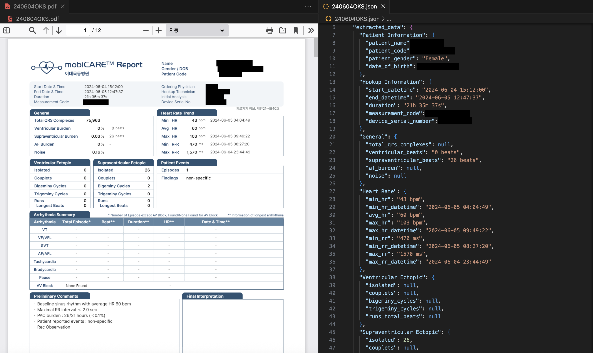
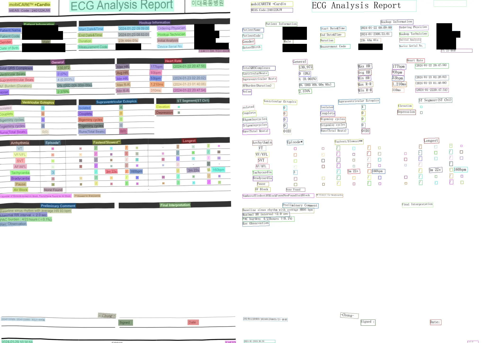
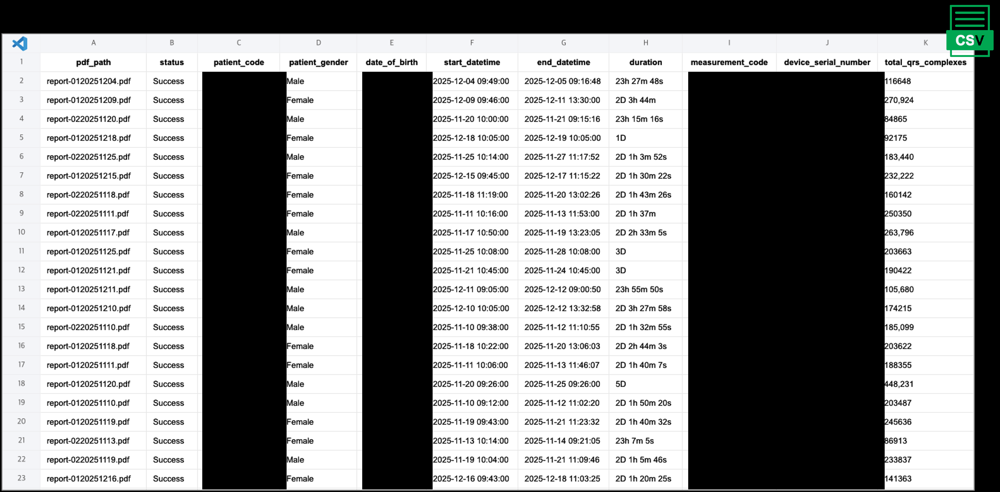

Tachycardia and bradycardia sound like opposites, but the same patient can have both. Someone shows up with tachycardia, gets started on rate-control medication for it, and that's where Tachycardia-Bradycardia Syndrome (TBS) turns dangerous: the drug treats the fast rhythm but also suppresses the heart's backup pacing, and the patient can develop a multi-second sinus pause. This project built a pipeline to catch that combined pattern before treatment starts, not after a pause already happened.
The hard part wasn't modeling, it was finding enough confirmed cases to model from. The clearest signal for TBS sits in Holter monitor reports, and those only exist as scanned PDFs on a vendor portal. I built a crawler to pull them at scale, ran them through Tesseract OCR, and used an LLM to turn the raw extracted text into structured, trainable data.
Out of roughly 600,000 patients in the EUMC ECG dataset, only about 10,000 had a matching Holter recording on file, and of those, only around 300 carried a confirmed TBS diagnosis. Every stage of this project had to work around that scarcity. With a labeled set that small, every label has to be trustworthy, because there's no room to average out noisy ones.
The first labeling pass pulled patients already coded as TBS in the EMR. That caught the clear-cut cases, but missed the ones where a physician's note described the same pattern in more abstract language instead of the exact diagnosis code. The second pass closed that gap by parsing Holter PDF reports and raw Holter signal data directly, filtering for a tachycardia episode immediately followed by an RR interval of 3 seconds or more, the same clinical signature as a dangerous pause. A physician and I then labeled the resulting cohort independently, since a false negative here means missing a patient who's actually at risk.
Holter analysis reports only existed as scanned PDFs sitting on a vendor portal, so step one was crawling that portal at scale. Each PDF then went through Tesseract OCR to pull out raw text, and an LLM converted that text into structured key-value JSON covering patient info, heart rate stats, and arrhythmia summaries. Those structured records were compiled into a clean dataset for training and analysis.
Screenshots from the actual pipeline. Patient names, dates of birth, and hospital identifiers are redacted with black boxes.

The left pane is the original scanned report, the right pane is the structured JSON an LLM produced from the raw OCR text

Bounding boxes over each detected field, used to validate OCR accuracy before trusting the extraction at scale

The final tabular dataset, ready for the labeling and modeling pipeline
Training a ResNet classifier on top of this dataset was the intended next step. The clear-cut cases were labeled, but the ambiguous EMR cases were waiting on a physician's review, and that review hadn't wrapped up by the time I left the company.